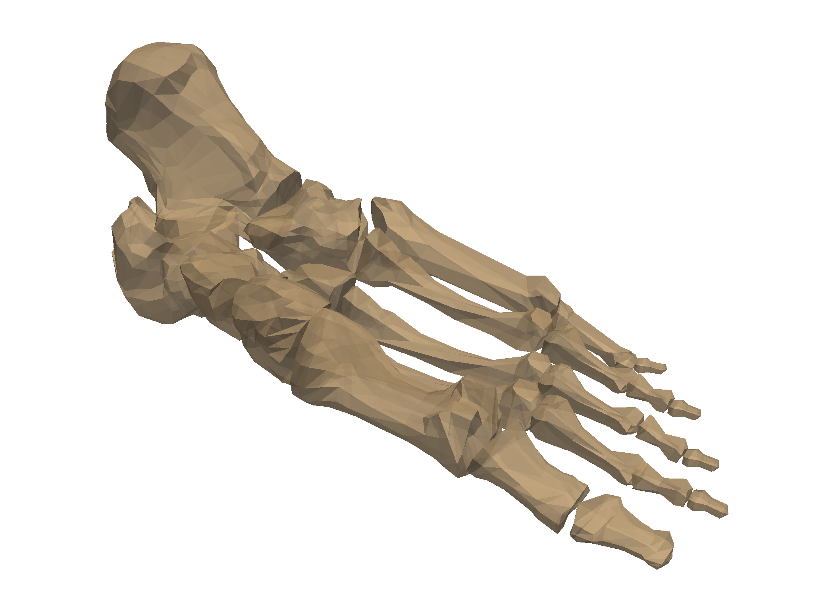
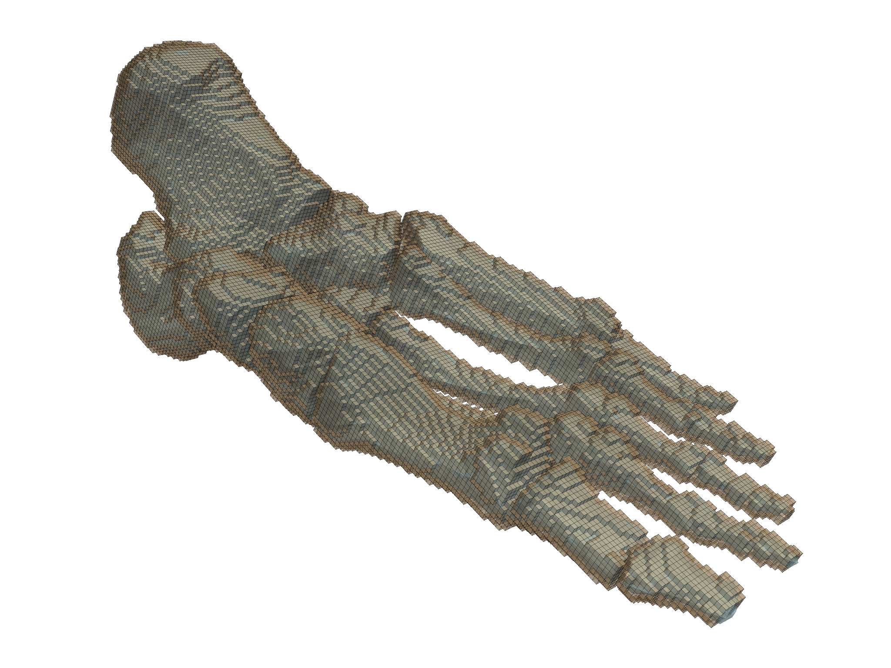
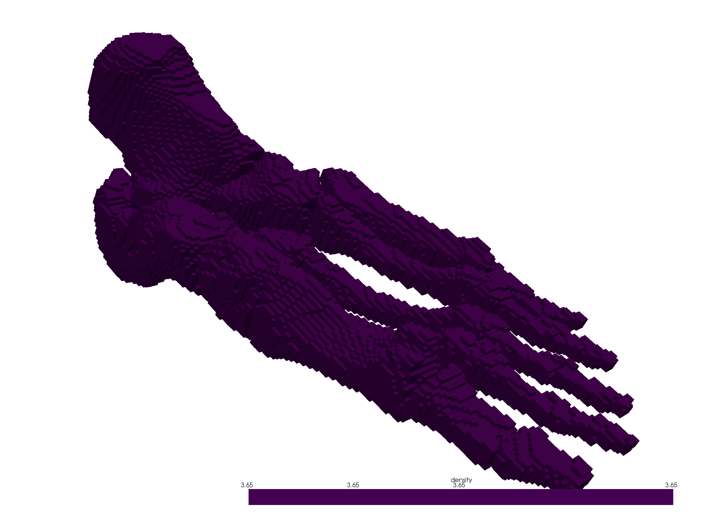
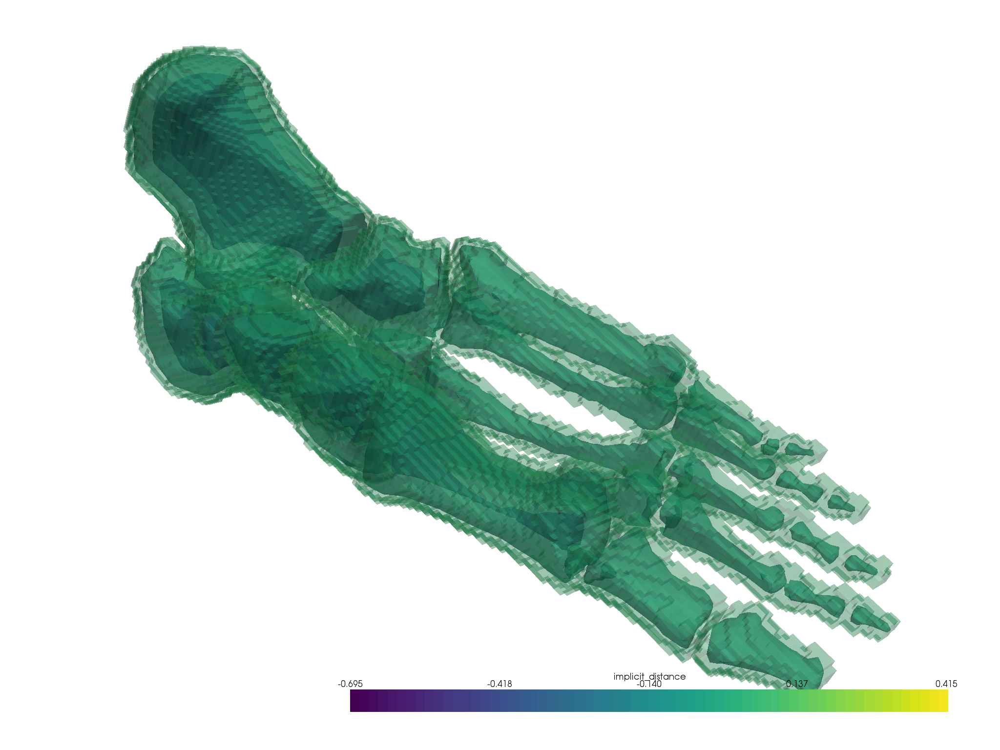

Note
Click here to download the full example code
Voxelize a Surface Mesh¶
Create a voxel model (like legos) of a closed surface or volumetric mesh.
This example also demonstrates how to compute an implicit distance from a
bounding pyvista.PolyData surface.
# sphinx_gallery_thumbnail_number = 2
from pyvista import examples
import pyvista as pv
import numpy as np
# Load a surface to voxelize
surface = examples.download_foot_bones()
surface
| PolyData | Information |
|---|---|
| N Cells | 4204 |
| N Points | 2154 |
| X Bounds | -5.633e+00, 5.633e+00 |
| Y Bounds | -1.860e+00, 1.860e+00 |
| Z Bounds | -2.125e+00, 2.126e+00 |
| N Arrays | 0 |
cpos = [(7.656346967151718, -9.802071079151158, -11.021236183314311),
(0.2224512272564101, -0.4594554282112895, 0.5549738359311297),
(-0.6279216753504941, -0.7513057097368635, 0.20311105371647392)]
surface.plot(cpos=cpos, opacity=0.75)

Out:
[(7.656346967151718, -9.802071079151158, -11.021236183314311),
(0.2224512272564101, -0.4594554282112895, 0.5549738359311297),
(-0.6279216753504943, -0.7513057097368636, 0.20311105371647395)]
Create a voxel model of the bounding surface
voxels = pv.voxelize(surface, density=surface.length/200)
p = pv.Plotter()
p.add_mesh(voxels, color=True, show_edges=True, opacity=0.5)
p.add_mesh(surface, color="lightblue", opacity=0.5)
p.show(cpos=cpos)

Out:
[(7.656346967151718, -9.802071079151158, -11.021236183314311),
(0.2224512272564101, -0.4594554282112895, 0.5549738359311297),
(-0.6279216753504943, -0.7513057097368636, 0.20311105371647395)]
We could even add a scalar field to that new voxel model in case we wanted to create grids for modelling. In this case, let’s add a scalar field for bone density noting:
voxels["density"] = np.full(voxels.n_cells, 3.65) # g/cc
voxels
| Header | Data Arrays | ||||||||||||||||||||||||||||||||||||||
|---|---|---|---|---|---|---|---|---|---|---|---|---|---|---|---|---|---|---|---|---|---|---|---|---|---|---|---|---|---|---|---|---|---|---|---|---|---|---|---|
|
|
voxels.plot(scalars="density", cpos=cpos)

Out:
[(7.656346967151718, -9.802071079151158, -11.021236183314311),
(0.2224512272564101, -0.4594554282112895, 0.5549738359311297),
(-0.6279216753504943, -0.7513057097368636, 0.20311105371647395)]
A constant scalar field is kind of boring, so let’s get a little fancier by added a scalar field that varies by the distance from the bounding surface.
voxels.compute_implicit_distance(surface, inplace=True)
voxels
| Header | Data Arrays | ||||||||||||||||||||||||||||||||||||||||||||
|---|---|---|---|---|---|---|---|---|---|---|---|---|---|---|---|---|---|---|---|---|---|---|---|---|---|---|---|---|---|---|---|---|---|---|---|---|---|---|---|---|---|---|---|---|---|
|
|
contours = voxels.contour(6, scalars="implicit_distance")
p = pv.Plotter()
p.add_mesh(voxels, opacity=0.25, scalars="implicit_distance")
p.add_mesh(contours, opacity=0.5, scalars="implicit_distance")
p.show(cpos=cpos)

Out:
[(7.656346967151718, -9.802071079151158, -11.021236183314311),
(0.2224512272564101, -0.4594554282112895, 0.5549738359311297),
(-0.6279216753504943, -0.7513057097368636, 0.20311105371647395)]
Total running time of the script: ( 1 minutes 33.017 seconds)